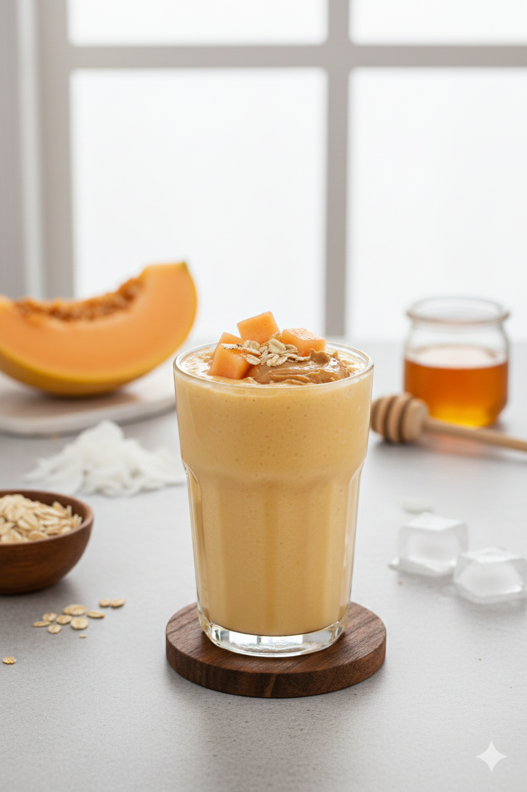

Home
"Muscular Freshness" Melon Shake

Image generated with AI
Description
The "Muscular Freshness" Melon Shake is the ultimate refreshing post-workout drink designed to rehydrate and refuel
your body simultaneously. Melon is naturally packed with water and essential electrolytes, making it perfect for recovery,
while its fast-absorbing carbohydrates quickly replenish your glycogen stores.
When blended with rolled oats for sustained energy and peanut butter for healthy fats, this shake provides a complete nutritional profile.
It is light on the palate, incredibly smooth, and will leave you feeling energized and satisfied.
Ingredients
- 2 cups ripe melon, peeled, seeded, and cubed (about 1/2 a medium-sized melon).
- 1/2 cup rolled oats (for complex carbohydrates and fiber).
- 2 tablespoons natural peanut butter (a great source of healthy fats and plant protein).
- 1 1/2 cups skim milk (or coconut milk for a tropical, dairy-free twist).
- 1 tablespoon honey (optional, if the melon isn't sweet enough or for an extra energy boost).
- Ice cubes (highly recommended for a chilled, thick consistency).
Steps
- Prepare the melon: your melon is very ripe and cold for the best flavor. Cut it into small, manageable cubes.
- Mill the oats:If you prefer a completely smooth texture, blend the dry oats first until they turn into a fine powder before adding other ingredients.
- Add solids:Place the melon cubes, peanut butter, and honey (if using) into the blender.
- Combine liquids and ice:Pour in the milk and add the ice cubes.
- Blends:Process on high speed for 60 to 90 seconds, or until the shake is velvety and perfectly homogeneous.
- Serve:Pour into a tall glass and enjoy immediately. You can garnish with a small slice of melon or a sprinkle of oats on top.